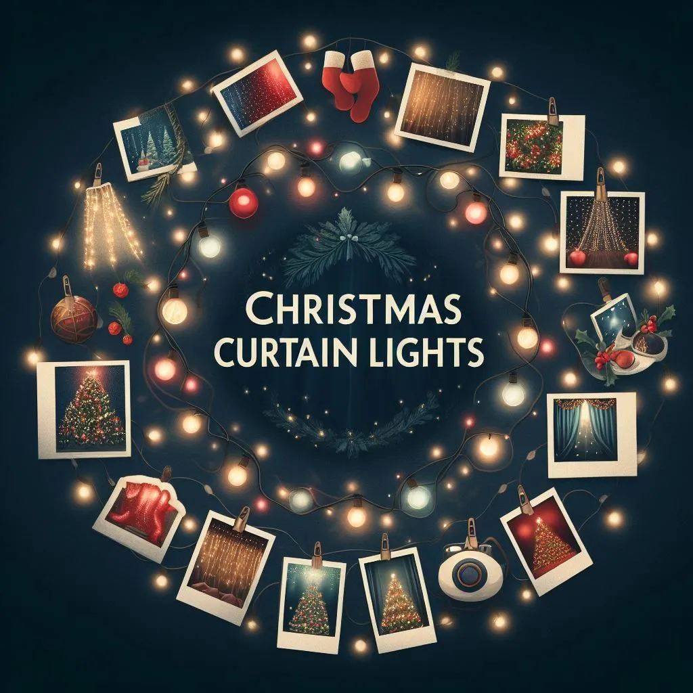

Unveiling Best Christmas Curtain Lights for Festive Ambiance
Creating a Magical Christmas Wonderland: Unveiling the Best Curtain Lights for a Festive Ambiance
Step into a world of enchantment this holiday season with the best Christmas curtain lights that will transform your home into a magical Christmas wonderland. From shimmering icicle designs to twinkling fairy lights, these captivating curtain lights offer a festive ambiance that will leave your guests spellbound. Whether you’re adorning your windows, walls, or outdoor spaces, these best Christmas curtain lights will create a stunning visual display that captures the spirit of the season.
With their versatility and ease of use, curtain lights are the perfect choice for adding a touch of whimsy to any space. Imagine the warm glow of these lights cascading down, creating a mesmerizing effect that will transport you to a winter wonderland. The possibilities are endless when it comes to decorating with curtain lights - you can drape them over your Christmas tree, hang them as a backdrop for holiday photos, or create a breathtaking display along your porch or patio.
Ready to make your Christmas dreams come true? Join us as we unveil the best curtain lights that will turn your home into a magical wonderland this festive season. Get ready to create memories that will last a lifetime with the help of these enchanting lights.
At the end of this blog, I have compared some of the best Christmas curtain lights available on Amazon. As an Amazon Associate, I earn from qualifying purchases.
Benefits of using best Christmas curtain lights for Christmas decor
Curtain lights, beyond their enchanting aesthetics, offer a plethora of benefits when it comes to Christmas decor. These best Christmas curtain lights stand out for their exceptional versatility. In contrast to traditional string lights, curtain lights easily drape or hang, facilitating the coverage of larger areas effortlessly. Whether your aim is to craft a stunning backdrop for holiday photos or turn your entire living room into a winter wonderland, curtain lights provide limitless creative possibilities.
What sets curtain lights apart is their remarkable energy efficiency. Designed with a focus on energy savings, these lights allow you to bask in the magical ambiance without concerns about your electricity bill soaring. Many curtain lights incorporate timer functions, enabling automatic on and off settings, thereby further curbing energy consumption.
Adding to their beauty and energy-saving attributes, curtain lights boast effortless installation and maintenance. Most curtain lights feature a plug-and-play design, simplifying the process of transforming your space. Furthermore, their durability and weather-resistant properties make them suitable for both indoor and outdoor use. With minimal effort, you can craft a dazzling display that leaves a lasting impression on your guests and infuses your home with festive joy.
Choose the best Christmas curtain lights to experience the magic of the season with ease and efficiency.

Types of curtain lights available in the market
When it comes to curtain lights, there is a wide variety of options available in the market. Each type offers its own unique charm, allowing you to find the perfect curtain lights to suit your personal style and preferences. Here are some of the most popular types of curtain lights:
-
Icicle Curtain Lights: These lights mimic the appearance of shimmering icicles, creating a magical winter wonderland effect. The icicle-shaped lights cascade down in a vertical pattern, adding a touch of elegance to any space. Whether you hang them on your porch or drape them over your windows, icicle curtain lights are sure to create a breathtaking display.
-
Fairy Curtain Lights: If you’re looking for a more whimsical and delicate look, fairy curtain lights are the perfect choice. These lights feature tiny LED bulbs that resemble fairy lights, creating a soft and enchanting glow. Fairy curtain lights are ideal for adding a touch of magic to your Christmas tree or creating a dreamy backdrop for your holiday photos.
-
Starry Curtain Lights: For a celestial touch, consider starry curtain lights. These lights feature star-shaped bulbs that twinkle and shimmer, creating a mesmerizing effect. Starry curtain lights are perfect for outdoor spaces or creating a celestial-themed Christmas display.
-
Colorful Curtain Lights: If you want to add a pop of color to your Christmas decor, consider colorful curtain lights. These lights come in a variety of vibrant hues, allowing you to create a festive and eye-catching display. Whether you opt for classic red and green or prefer a more modern color scheme, colorful curtain lights are sure to make a statement.
-
Waterfall Curtain Lights: If you want to create a truly dramatic effect, waterfall curtain lights are the way to go. These lights feature cascading strands of lights that resemble a waterfall, adding movement and depth to your Christmas decor. Whether you hang them on your staircase or use them as a backdrop for your holiday party, waterfall curtain lights are guaranteed to impress.
When choosing the type of curtain lights for your Christmas decor, consider the overall theme and style you want to achieve. Whether you prefer a classic, elegant look or a whimsical, playful vibe, there is a type of curtain lights that will perfectly complement your vision.
Factors to consider when choosing curtain lights
Before purchasing the best Christmas curtain lights for your Christmas decor, there are a few important factors to consider to ensure you make the right choice. Here are some key factors to keep in mind:
-
Length and Size: The length and size of the curtain lights will depend on the area you want to cover. With a measuring tape, measure the space where you plan to hang the lights to ensure you choose the right size. Consider the height and width of the area, as well as any specific design elements you want to incorporate.
-
Light Color: Curtain lights are available in a range of colors, from classic warm white to vibrant multicolor options. Consider the color scheme of your Christmas decor and choose lights that will complement it. Warm white lights create a cozy and traditional ambiance, while colorful lights add a playful and festive touch.
-
LED vs. Incandescent: When it comes to curtain lights, LED lights are the preferred choice due to their energy efficiency and durability. LED lights consume less energy and have a longer lifespan compared to incandescent lights. While LED lights may be slightly more expensive upfront, they will save you money in the long run.
-
Indoor vs. Outdoor Use: Consider whether you plan to use the curtain lights indoors or outdoors. If you’re using them outdoors, make sure they are weather-resistant and designed for outdoor use. Outdoor curtain lights are typically more durable and can withstand harsh weather conditions.
-
Safety Features: Safety should always be a top priority when choosing curtain lights. Look for lights that are UL certified, which ensures they meet safety standards. Additionally, consider lights that have built-in safety features such as overheating protection and low voltage operation.
By considering these factors, you can ensure that you choose the perfect curtain lights that will create the magical Christmas ambiance you desire.
Setting up the best Christmas curtain lights for a magical Christmas ambiance
Once you have chosen the best Christmas curtain lights for your Christmas decor, it’s time to set them up and create a magical ambiance. Here’s a step-by-step guide to help you:
-
Plan the Design: Before hanging the curtain lights, plan out the design and layout you want to achieve. Consider the height and width of the area, as well as any specific patterns or shapes you want to create. Sketch out your design on paper to visualize the final result.
-
Prepare the Space: Clean and prepare the space where you will be hanging the curtain lights. Remove any obstacles or decorations that might interfere with the installation process. If you’re hanging the lights outdoors, make sure the area is clean and free from debris.
-
Install Hooks or Rods: Depending on the type of curtain lights you have chosen, you may need to install hooks or rods to hang them. Use a measuring tape to ensure the hooks or rods are evenly spaced and level. If you’re hanging the lights on a wall, use adhesive hooks or clips that won’t damage the surface.
-
Hang the Curtain Lights: Carefully hang the curtain lights on the hooks or rods. Start from the top and work your way down, making sure the lights are evenly spaced and aligned. If the lights have different lengths, consider starting with the longest strands at the top for a cascading effect.
-
Test the Lights: Once the lights are hung, plug them in to test if they are working properly. Make sure all the bulbs are lit and that the lights are displaying the desired effect. If you notice any issues, check the connections and replace any faulty bulbs.
-
Adjust and Secure: After testing the lights, step back and assess the overall look. Make any necessary adjustments to ensure the lights are hanging straight and creating the desired effect. Use zip ties or clips to secure the lights in place and prevent them from sagging or falling.
-
Add Extra Decorations: To enhance the magical ambiance, consider adding additional decorations such as ornaments, garlands, or ribbons. These embellishments will complement the curtain lights and create a cohesive and festive look.
By following these steps, you can easily set up your curtain lights and create a mesmerizing Christmas ambiance that will wow your family and friends.
Creative ways to use curtain lights for Christmas decorations
Curtain lights offer endless creative possibilities when it comes to Christmas decorations. Here are some unique and creative ways to use curtain lights to enhance your holiday decor:
-
Christmas Tree: Instead of traditional string lights, use curtain lights to adorn your Christmas tree. Hang the lights vertically from the top of the tree, allowing them to cascade down like a waterfall. The curtain lights will create a stunning effect and give your tree a modern and sophisticated look.
-
Mantel Display: Transform your mantel into a festive focal point by draping curtain lights across it. The soft glow of the lights will create a cozy and inviting ambiance. Add garlands, ornaments, and stockings for a complete and festive mantel display.
-
Window Wonderland: Create a captivating display by hanging curtain lights in your windows. The lights will shimmer and sparkle, catching the attention of passersby. Consider adding sheer curtains or drapes for an added touch of elegance.
-
Outdoor Canopy: Turn your outdoor space into a magical oasis by creating a canopy of curtain lights. Hang the lights from trees, pergolas, or outdoor structures to create a dreamy and enchanting ambiance. Add outdoor furniture and cozy blankets for a cozy and inviting outdoor retreat.
-
Staircase Drama: Make a grand statement by hanging curtain lights along your staircase. The lights will add drama and elegance, creating a breathtaking focal point. Consider adding garlands or ribbons for a festive touch.
-
Photo Backdrop: Create a memorable photo backdrop for your holiday gatherings by hanging curtain lights on a wall. The soft glow of the lights will provide the perfect lighting for capturing precious moments with your loved ones.
-
Table Centerpiece: Add a touch of magic to your dining table by using curtain lights as a centerpiece. Place the lights in a glass jar or vase and surround them with ornaments, pinecones, or greenery. The curtain lights will create a warm and inviting ambiance for your holiday meals.
These are just a few creative ideas to inspire you to think outside the box and use curtain lights in unconventional ways. Let your imagination run wild and create a Christmas decor that is unique and enchanting.
Safety tips when using curtain lights for Christmas decor
While curtain lights can add beauty and magic to your Christmas decor, it’s essential to prioritize safety. Here are some important safety tips to keep in mind when using curtain lights:
-
Read the Instructions: Before installing the curtain lights, carefully read the manufacturer’s instructions. Familiarize yourself with the recommended usage, installation methods, and safety precautions.
-
Check for Damage: Inspect the curtain lights for any signs of damage or wear before installation. Check the cords for fraying or exposed wires and ensure that all bulbs are securely attached.
-
Use Extension Cords Safely: If you need to use extension cords, make sure they are rated for outdoor or indoor use, depending on where you plan to use the lights. Avoid overloading the extension cords and use surge protectors to prevent electrical hazards.
-
Avoid Overheating: Do not leave the curtain lights on for an extended period, especially when unattended. Overheating can occur and increase the risk of fire. Use timer functions or turn off the lights when not in use.
-
Keep Away from Flammable Materials: Ensure that the curtain lights are kept away from flammable materials such as curtains, drapes, or Christmas decorations. Maintain a safe distance to reduce the risk of fire.
-
Secure the Lights Properly: Ensure that the curtain lights are securely hung and do not pose a tripping hazard. Use hooks, clips, or zip ties to keep the lights in place and prevent them from falling or sagging.
-
Unplug During Maintenance: Whenever you need to clean or maintain the best Christmas curtain lights, unplug them from the power source. This will reduce the risk of electrical shock or accidents.
By following these safety tips, you can enjoy the beauty of the best Christmas curtain lights while ensuring the well-being of your home and loved ones.
Where to buy the best Christmas curtain lights for this Holiday season
Now that you’re ready to adorn your home with the best Christmas curtain lights, you might be wondering where to find the best options. Here are some popular places to buy the best Christmas curtain lights for this Holiday season:
-
Online Retailers: Online marketplaces such as Amazon, eBay, and Etsy offer a wide selection of curtain lights. You can browse through various brands, colors, and styles, read customer reviews, and compare prices to find the perfect lights for your Christmas decor.
-
Home Improvement Stores: Home improvement stores like Home Depot and Lowe’s often carry a range of curtain lights during the holiday season. Visit their stores or check their websites to see the available options.
-
Specialty Christmas Stores: Specialty Christmas stores are dedicated to all things holiday-related and are a great place to find unique and high-quality curtain lights. These stores often have knowledgeable staff who can help you find the perfect lights for your specific needs.
-
Local Decor Stores: Check out your local decor stores, especially during the holiday season. They may carry a selection of curtain lights that you can browse in person and get a feel for the quality and style.
Budget-friendly options for curtain lights
When it comes to choosing the best curtain lights for Christmas, it’s essential to find a reliable retailer that offers a wide range of options to suit your style and budget. Here are some top places to consider when purchasing curtain lights for your holiday decorations:
1. Online retailers
Online retailers such as Amazon, Walmart, and Target offer a vast selection of curtain lights in various styles and price ranges. These platforms provide a convenient shopping experience, allowing you to browse through numerous options from the comfort of your home. Read customer reviews and compare prices to ensure you’re getting the best value for your money. Additionally, online retailers often have deals and discounts during the holiday season, making it a great time to purchase curtain lights.
2. Specialty stores
Specialty stores that focus on holiday decorations and lighting are another excellent option when looking for curtain lights. These stores often carry a curated selection of high-quality lights that are specifically designed for festive occasions. Visit your local Christmas or home decor store to explore their range of curtain lights and get personalized recommendations from their knowledgeable staff. Shopping in-store also allows you to see the lights in person and assess their quality and appearance before making a purchase.
3. DIY options
If you’re feeling creative, you can also consider making your own curtain lights for a unique touch. Purchase a string of fairy lights and attach them to a sheer curtain or fabric of your choice. This DIY approach allows you to customize the length, color, and design of your curtain lights to match your personal style. Explore craft stores or online tutorials for inspiration and step-by-step instructions on creating your own magical curtain lights.
Now that you know where to find the best curtain lights for Christmas, let’s explore some budget-friendly options that will help you create a stunning display without breaking the bank.
Comparing the Best Christmas Curtain Lights
When it comes to choosing the best curtain lights for your Christmas decor, a wide array of options are available to suit various preferences and needs. We’ve curated a list of some of the best Christmas curtain lights available, each with its unique features and qualities to help you make an informed decision. Let’s explore the best options:
-
Twinkly LED Curtain Lights: These curtain lights are known for their smart capabilities, allowing you to control the lighting effects via a smartphone app. With customizable colors, patterns, and animations, they offer a dynamic and personalized lighting experience. Perfect for tech-savvy decorators looking to create a dazzling display.
-
Globe String Lights Curtain: If you’re aiming for a classic and elegant look, the globe string lights curtain might be your choice. These lights feature warm white LEDs encased in charming globe-shaped bulbs, creating a timeless, inviting atmosphere. They’re ideal for those who appreciate a traditional holiday aesthetic.
-
Remote-Controlled Curtain Icicle Lights: For convenient operation, consider curtain icicle lights with a remote control. You can easily adjust the lighting modes, brightness, and timer settings without leaving your cozy spot. These lights offer flexibility and ease of use, making them a practical choice for busy holiday decorators.
-
Multicolor Waterfall Curtain Lights: Bring a vibrant and playful touch to your decor with multicolor waterfall curtain lights. These lights offer a cascade of colors and are perfect for those who want to infuse a sense of joy and festivity into their Christmas setup. They create a captivating visual display that’s sure to delight.
-
Battery-Operated Curtain Lights: If you’re looking for flexibility in terms of placement, battery-operated curtain lights are a great option. They don’t require an outlet, making them suitable for various indoor and outdoor applications. These lights are excellent for those who need versatility in their decor arrangement.
By comparing these options, you can find the curtain lights that align with your decor vision and desired features. Whether you prioritize smart control, traditional charm, or convenience, there’s a curtain light to suit your unique needs. With the right choice, you can transform your space into a magical Christmas wonderland.
Conclusion: Transforming your home into a Christmas wonderland with curtain lights
Decorating for Christmas doesn’t have to be expensive. With a little creativity and resourcefulness, you can achieve a festive ambiance with budget-friendly curtain lights. Here are some affordable options to consider:
1. String lights with curtain clips
If you already have a string of fairy lights, you can easily transform them into curtain lights by using curtain clips. These clips allow you to hang the lights vertically, creating a curtain-like effect. Simply attach the clips to the top edge of your lights and hang them from a curtain rod or any other suitable support. This budget-friendly option gives you the flexibility to repurpose existing lights and achieve a stunning visual display.
2. LED curtain lights
LED curtain lights are an energy-efficient and cost-effective option for your Christmas decorations. These lights consume less electricity compared to traditional incandescent lights, helping you save on your energy bills. LED curtain lights also have a longer lifespan, ensuring that you can enjoy them for multiple holiday seasons without needing frequent replacements. Look for LED curtain lights with adjustable settings for different lighting effects, such as steady glow, twinkling, or fading.
3. DIY curtain lights
For those who enjoy a hands-on approach, creating DIY curtain lights can be a fun and economical option. Purchase a roll of sheer fabric or use an old curtain, and attach fairy lights to the fabric using safety pins or small hooks. This DIY method allows you to control the length and density of the lights, giving you complete creative freedom. You can also experiment with different colored fabrics or add ornaments and ribbons to enhance the festive look.
By opting for budget-friendly curtain lights, you can bring the magic of Christmas into your home without straining your wallet. Now, let’s conclude our journey to creating a Christmas wonderland with curtain lights.